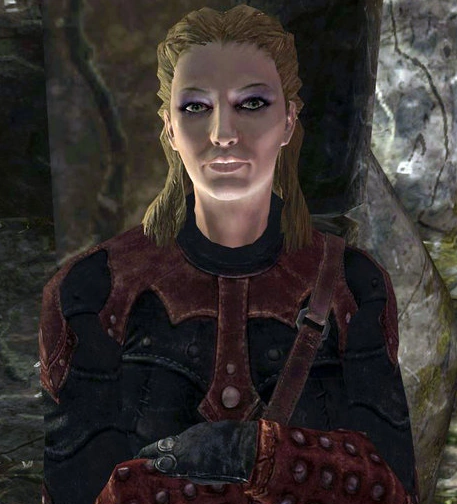
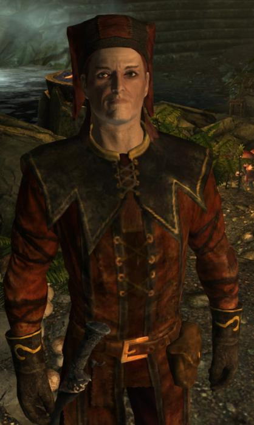
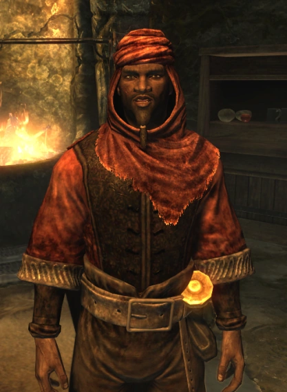

СЛАВА СИТИСУ
Узри Пустоту. Она ждет.
🜏 Истоки: Мораг Тонг
Мораг Тонг появились в Морровинде в Первую Эпоху. Они служили Мефале - даэдрическому принцу убийств и интриг. В отличие от Братства, убийства Мораг Тонг были легальными: они действовали по специальным "Черным указам", которые выдавали Великие Дома Данмера.
Их влияние простиралось далеко за пределы Морровинда. Именно Мораг Тонг убили Императора Ремана III в 1Э 2920 году.
Почему они стали нелегальными? В 2Э 324 году они убили Потестата Версиду-Шая - правителя Акавирской династии, который правил всей Империей. Но в своей гордыне убийцы оставили кровавую надпись "МОРАГ ТОНГ" на стене. Империя пришла в ярость и объявила гильдию вне закона на всей территории Тамриэля, кроме родного Морровинда. Западные отделения гильдии оказались отрезаны и брошены.
🜏 Рождение Тёмного Братства
В изоляции, в Сиродиле, оказалась ячейка Мораг Тонг во главе с тёмной эльфийкой, которую позже назовут Матерью Ночи. Она услышала голос Ситиса, Владыки Пустоты. Ситис сказал, что Мораг Тонг продались политике и забыли истинную веру.
Мать Ночи принесла в жертву своих пятерых детей, отправив их души в Пустоту - высший дар Ситису. За это ее убили собственные соседи, но ее дух продолжил говорить с теми, кто слышит.
Отколовшиеся от Мораг Тонг последователи голоса Матери Ночи основали Тёмное Братство - культ, который убивает не ради денег, а ради наполнения Пустоты. С этого момента началась Безмолвная война между двумя гильдиями, длящаяся тысячи лет.
🜏 Ключевые фигуры

Астрид
Лидер Фолкритского святилища. Прагматик, отвергнувший старые традиции. Её решение предать Слышащего ради спасения Братства привело к трагическим последствиям.

Цицерон
Безумный хранитель гроба Матери Ночи. Последний истинно верующий, помнящий старые устои. Его безумие — результат одиночества и преданности, которую никто не разделял.

Мать Ночи
Древний дух, основавший Братство после того, как пожертвовала своими детьми ради служения Ситису. Её голос слышит только Избранный - новый Слышащий.

Назир
Циничный редгард, выдающий контракты новичкам. Пережил резню в убежище и помог возродить Братство.
🜏 Сюжет: Тёмное Братство в Скайриме
"Потерянная невинность" / Innocence Lost
Начало: Виндхельм, дом Авентуса Аретино.
Мальчик Авентус Аретино проводит Чёрное Таинство - древний ритуал призыва убийц. Вокруг него разбросаны кости, сердце, человеческая плоть. Он молит Мать Ночь прислать смерть для Грелод Доброй - жестокой смотрительницы приюта "Честная добыча" в Рифтене.
Ты выполняешь его просьбу. Убиваешь Грелод в её же кабинете. Дети ликуют. Через несколько дней тебе передают записку: "Мы знаем" с отпечатком Чёрной Руки. Ложись спать - пробуждение будет жутким.
"С такими друзьями..." / With Friends Like These...
Начало: Заброшенная хижина, пробуждение после записки.
Ты просыпаешься в незнакомом месте. На полу - трое связанных людей с мешками на головах. На полке сидит Астрид, лидер Тёмного Братства. Она злится: ты украл её контракт.
Искупить вину можно только одним способом: убить одного из троих. Астрид даёт пароль "Тишина, брат мой" и отправляет в убежище Фолкрита. Если попытаться убить Астрид - начнётся альтернативная цепочка уничтожения Братства.
"Убежище" / Sanctuary
Начало: Сосновый бор у Фолкрита, пароль у камней.
Внутри Астрид знакомит тебя с "семьёй": циничный Назир, кузнец-оборотень Арнбьорн, вампирша-ребёнок Бабетта, молчаливая Габриэлла... И Цицерон - безумный шут, охраняющий гроб с телом Матери Ночи. Астрид считает его опасным безумцем и просит присмотреть за ним.
Назир выдаёт первые задания - проверка. Ты выполняешь. Ты теперь часть Братства.
"Прощай, любовь" / Mourning Never Comes
Начало: Астрид даёт задание.
В Маркарте живёт Муири, которую обманул её бывший любовник Ален Дюфон. Он ограбил её семью и скрылся. Муири жаждет мести.
Ты выслеживаешь Алена в двемерских руинах Ральдбтхар и отправляешь его к Ситису. По желанию можно убить свидетельницу Нильсин Расколотый Щит.
"Шёпот во тьме" / Whispers in the Dark
Начало: Возвращение в убежище.
Цицерон заперся в комнате с гробом. Астрид подозревает предательство. Она приказывает тебе забраться в гроб и подслушать.
В темноте ты слышишь голос Матери Ночи. Она говорит не с Цицероном. Она говорит с тобой. Ты - новый Слышащий. Астрид не верит. Конфликт нарастает.
"Тишина со смертью" / The Silence Has Been Broken
Начало: Мать Ночи называет имя.
Голос велит найти Амона Моттьера в гробнице Волунруд. Старик раскрывает план: убить кузину императора, чтобы выманить самого императора Тита Меда II в Скайрим.
"Пока смерть не разлучит нас" / Bound Until Death
Начало: Амон Моттьер называет цель.
В Солитьюде готовится свадьба Виттории Вичи - кузины императора. Ты проникаешь на торжество и совершаешь убийство. Свадьба превращается в похороны. Император лично направляется в Скайрим.
"Уязвимое место" / Breaching Security
Начало: Габриэлла сообщает сразу после свадьбы.
Нужно ослабить охрану императора. Командир Марон - глава Пенитус Окулятус. Его сын Гай Марон объезжает города. Ты убиваешь Гая и подбрасываешь поддельное письмо. Марон-старший клянётся отомстить.
"Лекарство от безумия" / The Cure for Madness
Начало: Возвращение в убежище.
Цицерон сошёл с ума, напал на сестёр и сбежал в убежище Рассвета. Астрид даёт тебе коня Тенегрива. В глубине катакомб ты находишь Цицерона. Выбор: убить безумца или пощадить последнего хранителя старых традиций.
"Убийственный рецепт" / Recipe for Disaster
Начало: Возвращение к Амону Моттьеру.
Чтобы приблизиться к императору, нужно выдать себя за Гурмана - легендарного повара. Настоящий Гурман скрывается в таверне "Ночные Ворота". Ты убиваешь его и забираешь грамоту.
"Смерть Империи" / To Kill an Empire
Начало: Под видом Гурмана ты идёшь в Солитьюд.
Ты проникаешь в Императорскую башню и подаёшь отравленный суп. Император падает мёртвым. При побеге на мосту тебя встречает Командир Марон. Он раскрывает правду: убитый - всего лишь двойник. Настоящий император жив. Астрид сдала тебя, но Марон нарушает договор и штурмует убежище.
"Воплощённая смерть" / Death Incarnate
Начало: Возвращение в убежище.
Внутри - пожар, трупы. Пенитус Окулятус уже здесь. Ты находишь Астрид - она обгорела до полусмерти. В агонии она совершает Чёрное Таинство на саму себя. Ты исполняешь её последнюю волю и забираешь Клинок Горя.
"Слава Ситису!" / Hail Sithis!
Начало: Амон Моттьер даёт последнюю наводку.
Настоящий император находится на корабле "Катария" у берегов Солитьюда. Ты пробираешься на борт и убиваешь Тита Мида II. В последних словах - мудрость и принятие судьбы.
Ты возвращаешься к заказчику. Последний выбор: оставить в живых или убить. Братство возрождено. Новое убежище в Рассвете и конь Тенегрив - твои.
🜏 Твой выбор
Ты возвращаешься к Амону Моттьеру в Вайтран. Он выдаёт награду - 20 000 золотых. Император Тит Мид II перед смертью просил убить заказчика. Твоё последнее решение:
- Сохранить ему жизнь - ты выполнил контракт как наёмник.
- Убить его - исполнить последнюю волю императора, отомстить за манипуляции.
Братство возрождено. Ты становишься новым лидером. Тени снова в силе. Слава Ситису!